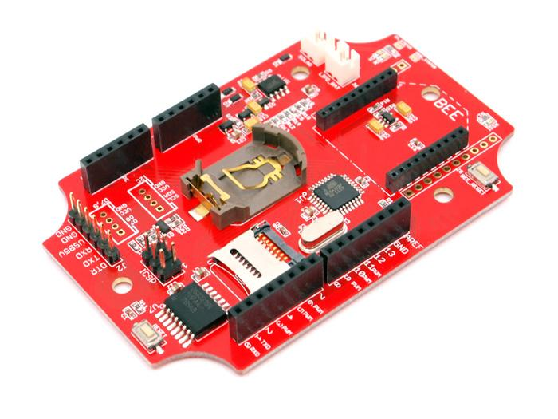

|
请加入最新stalker 3.0。我来编辑这个条目！
|
Seeeduino Stalker is a feature rich Arduino compatible Wireless Sensor Network node with Data logger functionality. Its modular structure and onboard peripherals makes it convenient to log time stamped sensor data on a periodic basis. Seeeduino Stalker comes with a Temperature sensor, RTC with backup power, SD Card Socket, Bee Socket and Solar LiPoimer Ion Battery Charger. The Seeeduino Stalker is a good candidate for all your tracking, monitoring and control projects.
Please note that the current (and also the latest) version of is Seeeduino-Stalker v3
Clicking on the images below will take you to the documentation for the corresponding version.

|

|
 | 
| ||
| Parameter | v1.0 | v2.0 | v2.1 | v2.2 | v2.3 | v3 | Remarks |
|---|---|---|---|---|---|---|---|
| Product Release Date | 23rd Dec 2009 | 17th Dec 2010 | 3rd Oct 2011 | 27th Dec 2011 | 29th Dec 2011 | 6th Jun 2014 | |
| Production Status | Discontinued | Discontinued | Discontinued | Discontinued | In Production | In Production | |
| User LED & Switch | |||||||
| User LED | PB5 (Arduino Pin 13) | PB0 (Arduino Pin 8) | PB0 (Arduino Pin 8) | PB5 (Arduino Pin 13) | PB5 (Arduino Pin 13) | PB0 (Arduino Pin 13) | |
| User Switch | PB4 (Arduino Pin 12) | Not Present | Not Present | Not Present | Not Present | Not Present | |
| Arduino Compatibility | |||||||
| Physically compatible with Arduino pinout | Yes | Yes | Yes | Yes | Yes | Yes | Compatible with Diecimila/Duemilanove/UNO |
| Software compatible with Arduino | Yes | Yes | Yes | Yes | Yes | Yes | Bootloader preloaded |
| Atmega168 variant Available | Yes | No | No | No | No | No | |
| Atmega328 variant Available | No | Yes | Yes | Yes | Yes | Yes | |
| AVRISP 6 Pin header present | Yes | Yes | Yes | Yes | Yes | Yes | |
| FT232RL & USB Connector Present | No | No | No | No | No | No | In both version "UartSBee V3.1" or V4.0 must be brought seperately and used for program downloading using Arduino IDE. A connector to mate to UartSBee is present on both versions. Microcontroller reset will automatically be controlled by DTR. |
| Standalone Operation | Yes | Yes | Yes | Yes | Yes | Yes | |
| Operation as a shield for Arduino/Seeeduino | Yes | No | No | No | No | No | |
| Can be stacked further in shield mode? | Yes | N.A. | N.A. | N.A. | N.A. | N.A. | Using I2C Interface |
| Real Time Clock | |||||||
| Chip | DS1307 | RX8025 | DS3231 | DS3231 | DS3231 | DS1337 | |
| Onboard backup power source | CR2032 Coin Cell | Super Capacitor | CR2032 Coin Cell | CR2032 Coin Cell | CR2032 Coin Cell | CR1220 Coin Cell | |
| Interface | I2C | I2C | I2C | I2C | I2C | I2C | |
| I2C Interface | |||||||
| Connector for direct connection to PC4 and PC5 (ie SCL and SDA) of the microcontroller | Yes | Yes | Yes | Yes | Yes | Yes | |
| Onboard level translation for connecting to 5.0 volt devices while microcontroller operates in 3.3v mode | Yes (using PCA9306) | Yes (using N channel enhancement MOSFET) | Yes (using N channel enhancement MOSFET) | Yes (using N channel enhancement MOSFET) | Yes (using N channel enhancement MOSFET) | Yes (using N channel enhancement MOSFET) | |
| Power Supply | |||||||
| From DC Supply | Yes (5-12V DC) | Yes (connect to Solar Cell Connector, but apply 5.0 Volts only) | Yes (connect to Solar Cell Connector, but apply 5.0 Volts only) | Yes (connect to Solar Cell Connector, but apply 5.0 Volts only) | Yes (connect to Solar Cell Connector, but apply 5.0 Volts only) | Yes (connect to Solar Cell Connector, but apply 5.0 Volts only) | |
| From USB | Yes (when used with UartSBee V3.1) | Yes (when used with UartSBee V3.1) | Yes (when used with UartSBee V4.0 or FTDI Cable) | Yes (when used with UartSBee V4.0 or FTDI Cable) | Yes (when used with UartSBee V4.0 or FTDI Cable) | Yes (when used with UartSBee V4.0 or FTDI Cable) | |
| From Solar Panel | No | Yes (Seperate Connector Present) | Yes (Seperate Connector Present) | Yes (Seperate Connector Present) | Yes (Seperate Connector Present) | Yes (Seperate Connector Present) | |
| From Lithium Polymer Battery | No | Yes (Seperate Connector Present) | Yes (Seperate Connector Present) | Yes (Seperate Connector Present) | Yes (Seperate Connector Present) | Yes (Seperate Connector Present) | |
| Battery voltage measurement | No | Yes (Jumper for connecting to ADC7) | Yes (Jumper for connecting to ADC7) | Yes (Jumper for connecting to ADC7) | Yes (Jumper for connecting to ADC7) | Yes (Battery voltage connecting to ADC7) | |
| Battery Charging? | No | Yes (Through solar cell, Managed by CN3063 Chip) | Yes (Through solar cell, Managed by CN3063 Chip) | Yes (Through solar cell, Managed by CN3063 Chip) | Yes (Through solar cell, Managed by CN3063 Chip) | Yes (Through solar cell, Managed by CN3065 Chip) | |
| Battery Charging Status Read? | No | Yes (Digital Pin 6&7) | Yes (Digital Pin 6&7) | Yes (ADC6) | Yes (ADC6) | Yes (ADC6) |